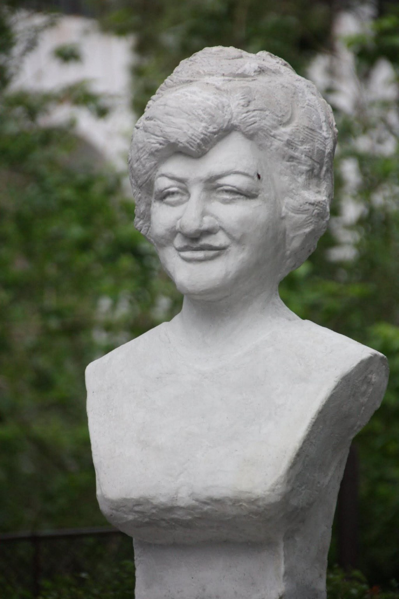
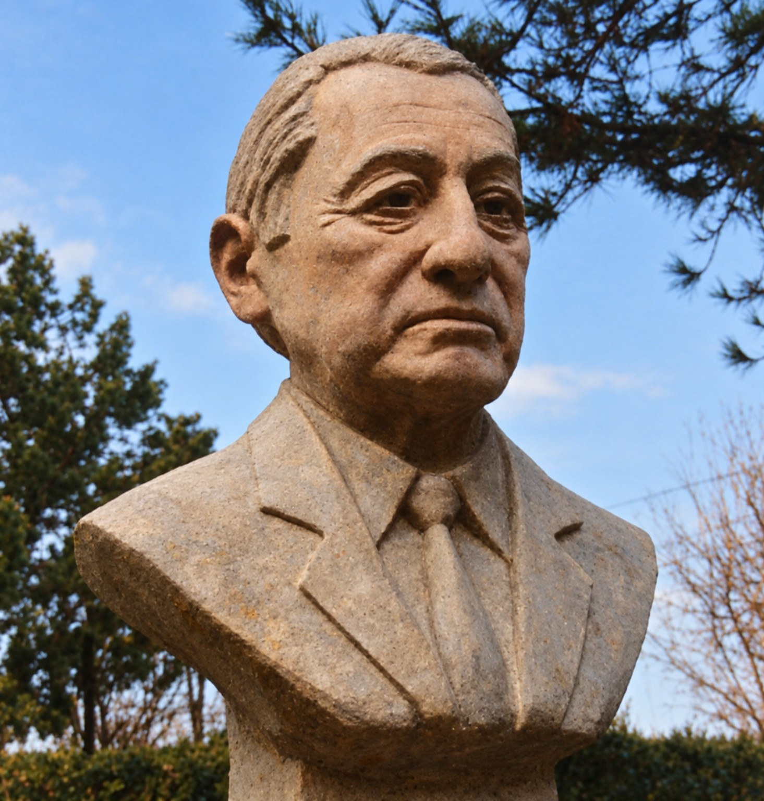

SCULPTURĂ
Sculptură la comandă, realizată cu finețe
Artistul Marcel Duțu realizează sculpturi personalizate, cu atenție la detalii și finisaje de mare finețe. Lucrările pot fi busturi, portrete sau alte forme și idei propuse de client, în orice material, în funcție de cerințele proiectului. Pentru o sculptură la comandă, conceptul și detaliile sunt stabilite împreună cu clientul înainte de realizare.

Ileana Constantinescu
Portret sculptural dedicat interpretei de muzică populară Ileana Constantinescu, realizat de Marcel Duțu. Bustul a fost dezvelit în septembrie 2015, la Drăgănești-Olt.

Traian Zorzoliu
Bustul omului de cultura Traian Zorzoliu aflat în gradina Muzeului Câmpiei Boianului din Drăgăneşti Olt care îi poartă numele, realizat de artistul Marcel Duțu.